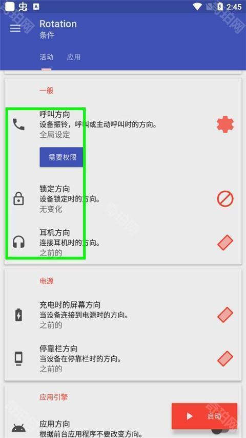

还在手动切横竖屏？Rotation 把自动旋转这件事做对了
同类自动方向工具里，Rotation 是少数真正理解用户多场景需求的选手。从事件触发到应用规则，它把方向控制从一个开关变成了一套自动化系统。
这个类目里它排在什么位置
自动旋转这个事，系统自带的那个开关显然不够用。想让微信竖屏、B站横屏、导航永远横屏——系统做不到，大厂的定制 ROM 也只是加了个"应用方向锁定"的粗粒度选项。老牌自动化工具可以拼出来，但写 Tasker 配置的门槛已经把大部分人挡在门外了。
Rotation官网就是在这个空档里冒出来的：它不做全功能自动化，只盯着"屏幕方向"这一件事，把它做到足够细、足够准、足够省心。
它的差异化在哪
同类工具能做的事大体重叠，但 Rotation 在三个维度上明显领先。
事件驱动：不只是按 App 分方向
大部分用户对自动方向的理解还停留在"某某 App 用横屏"。Rotation 把这个思路往前推了一步——按场景分方向。充电时自动横屏、插耳机时保持竖屏、打电话强制竖屏、接了底座切到横屏模式——这些都是系统自动旋转根本覆盖不到的场景。
背后用的是安卓系统广播，不需要额外权限，检测充电器插拔、耳机连接状态都是原生能力。我车上装了个廉价的无线车充，插上去手机立刻横屏开导航，拔掉就回到竖屏刷微信——这个切换动作每天要发生好几次，手动切的话早就烦了。

优先级机制：解决"谁优先"的灵魂拷问
当多个事件同时触发时，方向该听谁的？正在充电（想横屏）、同时插着耳机（想竖屏）、还在打一个电话（想竖屏）——系统自动旋转只会一脸懵地选传感器当前的方向。
Rotation 给了一张可视化的优先级表，每个事件可以上下拖动排顺序。默认通话最优先，锁屏其次，耳机、充电、底座依次往下。大部分人不用改默认，但如果你有特殊需求——比如"我充电比通话重要"——长按拖动就能调整。而且应用规则的优先级永远在事件之上，这一层级关系设计得很合理，不会出现事件条件把应用规则给盖过去的尴尬。
强制方向链路：从验证到排障的完整闭环
很多工具装完就不管了，出问题才发现根本没生效。Rotation 的文档里有一个"强制横屏验证"环节：关掉系统自动旋转、切强制横屏、看屏幕有没有横过来、再切回默认看能不能恢复——四步走，能进能出才算整条链路通了。
这个设计挺务实的。安卓碎片化太严重了，厂商改了权限模型、ROM 加了白名单、启动器写死了方向锁定——任何一环都可能让方向切换静默失败。Rotation 先帮你验证链路，再让你配规则，省了很多"配了半天发现根本不生效"的无用功。

它的取舍：为这些优势付出了什么
世界上没有免费的午餐。
上手门槛比系统自带的开关高不少。你得理解"应用规则"和"事件条件"两套体系，还要搞清楚优先级排序的逻辑。第一次打开看到一堆方向模式（强制横屏、强制竖屏、传感器横屏、反向竖屏、跟随传感器……）和事件类型时，确实容易懵。好消息是它的向导做得还可以，跟着走一遍基本能跑通，rotation文档也覆盖了常见场景的配置示例。
平台限制方面要提一下小米 MIUI。反向竖屏在部分小米设备上用默认桌面启动器时会被禁用，切过去闪一下又跳回来——这不是 Rotation 的 bug，是 MIUI 自己把反向竖屏在桌面层面给锁死了。解决方法简单但有点膈应：换个第三方启动器就好，Nova、Lawnchair、Microsoft Launcher 都行。其他方向模式不受影响，只是反向竖屏这一个。
还有一点：它需要"修改系统设置"权限。安装包从官方下载拿，这个权限在新系统上要手动去系统设置里开，不在 Rotation 内就能触发。不算麻烦，但第一次用的人容易漏。
选购结论：什么样的人选它
如果你只用一个方向——比如永远横屏或者永远竖屏——系统自带的自动旋转开关关掉就行，不用额外装东西。Tasker 用户能自己拼出类似的效果，但花的时间和精力跟 Rotation 的价值完全不在一个量级上。
真正值得装它的人，是那些在不同场景间频繁切换的：开车用手机导航、床头充电看视频、桌面支架刷短视频、插耳机听播客还想偶尔看屏幕——场景多了之后手动切方向的摩擦会变得难以忍受。Rotation 把这些切换变成了自动的、事件驱动的、优先级可配的系统。
我的推荐语很直接：如果你的手机每天要换三次以上方向，Rotation 是目前同类里最省心的选择。
这套资料在 GitHub 上维护着完整的文档和安装包备份，方便随时查阅和下载；Gitee 和 GitCode 也同步了同一份内容，给国内访问不太顺畅的朋友备了个份。